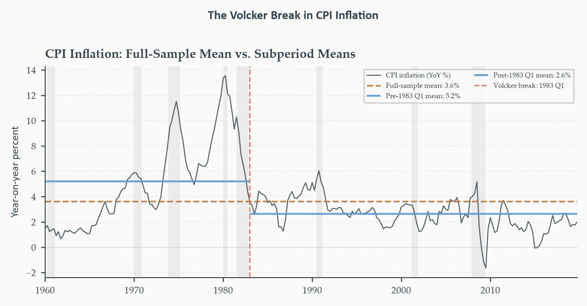

Structural Breaks
Chapter 6
2026-09-03
An Assumption We Never Stated
Every model in Chapters 3 through 5 rested on something we never said out loud: that the process generating the data at the end of the sample is the same process that generated it at the beginning.
- Log GDP’s mean growth rate fell after 1984
- Inflation went from near-unit-root persistence to clean mean reversion after Volcker
- For many series, over many historical periods, “same process throughout” is simply false
A model that pools two genuinely different regimes into one set of parameter estimates doesn’t average them sensibly — it misrepresents both. This chapter builds the formal tools for detecting that misrepresentation, and for responding to it once found.
Why This Chapter Matters
Four tests, one diagnostic layer, sitting between model identification and model use:
- Chow test — do coefficients differ across two subsamples, when the break date is known?
- QLR and Bai-Perron — the same question, when the break date (or even the number of breaks) is unknown
- Zivot-Andrews — is an apparent unit root actually a broken deterministic trend in disguise?
Running examples: GDP growth, continued from Chapters 1–5, and a new companion, CPI inflation — the Volcker disinflation gives structural breaks a second, sharper case study.
Today’s Roadmap
- When the rules change
- The Chow test
- From known to unknown break dates: QLR and Bai-Perron
- Zivot-Andrews: unit roots or broken trends?
- Responding to a detected break
When the Rules Change
Section 1
Why Economic Relationships Aren’t Physical Laws
A physical constant doesn’t change because the world around it changed. Why would an estimated economic coefficient be any different?
Parameter stability. The assumption that a model’s coefficients are the same across every subsample of the data — maintained implicitly in every model from Chapters 3 through 5, and the object explicitly tested in this chapter.
Economic relationships emerge from the behavior of agents operating under specific institutions, technologies, and policy regimes. When those background conditions change durably — not transiently — the relationships governing the data change with them. A model estimated before the change carries parameter values calibrated to a world that no longer exists.
What Pooling Actually Costs
A single ARIMA over the full 1947–2019 GDP sample pools the Korean War boom, the postwar productivity miracle, 1970s stagflation, the Great Moderation, and the slow post-GFC recovery. Mean growth, persistence, and shock variance all differ across these sub-epochs.
Averaging is not synthesis — it’s fiction. A parameter vector fit across all of them represents none of them well.
The Chapter 5 Puzzle, Named Precisely
Recall the rolling evaluation: forecast errors didn’t scatter uniformly across the sample — they clustered. The ARIMA’s edge over the random walk shrank and vanished at \(h=4\).
That pattern is exactly what we’d expect if the model’s estimated drift and persistence were an average over two genuinely different regimes. The ARIMA anchored its forecasts on a mean growth rate reflecting the high-growth early decades more than the slower recent pace. We named this problem in Chapter 5. We did not solve it — until now.
Three Ways a Process Can Break
Mean shift. The unconditional mean changes from \(\mu_1\) to \(\mu_2\) at date \(\tau\) — average growth genuinely different before and after.
Variance break. The volatility of innovations changes — exactly what the Great Moderation represents.
Coefficient break. The dynamic structure itself changes — AR or MA coefficients, not just the mean or variance.
These can occur separately or together. The Great Moderation: primarily a variance break, with a modest mean shift alongside it. The Volcker disinflation: a large mean shift in inflation and a change in its persistence — a coefficient break.
The distinction isn’t academic — it determines which test can even detect the break, and how to respond once one is found. A test built to find coefficient instability will walk right past a pure variance change, as Section 2 demonstrates directly.
The Common Structure Behind Every Test in This Chapter
Chow, QLR, Bai-Perron, Zivot-Andrews — four different names, four different statistics. What do they actually have in common?
Every one of them asks the same underlying question: does a model that lets parameters differ across subsamples fit significantly better than one constrained to use the same parameters throughout?
If yes — at what date, or dates, does the improvement concentrate? The tests differ only in how much they assume about the break date and the number of breaks, and therefore in how they handle the statistical complications that arise when those quantities are unknown.
The Chow Test
Section 2
A Known Break Date: The Simplest Question
Suppose we have a strong prior about when a break occurred. For GDP growth and the Great Moderation, that prior is 1984 Q1 — repeated across the literature, visually evident, tied to a specific economic story. Given that prior, what’s the simplest test we could run?
\[ y_t = \mathbf{x}_t'\boldsymbol\beta+u_t \]
Chow test (1960). \(H_0\): \(\boldsymbol\beta\) is the same in both subsamples defined by candidate break date \(\tau\). \(H_1\): it differs before and after. One of the oldest procedures in applied econometrics — transparent by design, making no attempt to be clever about what it doesn’t already know.
Formulation 1: The Dummy-Variable Regression
Define \(D_t=\mathbf{1}\{t\geq\tau\}\), interact it with every regressor including the intercept:
\[ y_t = \mathbf{x}_t'\boldsymbol\beta_1+D_t\cdot\mathbf{x}_t'\boldsymbol\delta+u_t \]
\(\boldsymbol\delta\) captures the change in each coefficient at the break. Under \(H_0\): \(\boldsymbol\delta=\mathbf{0}\) — the post-break dummies add nothing.
\[ F = \frac{(\text{RSS}_R-\text{RSS}_U)/k}{\text{RSS}_U/(T-2k)} \sim F(k,T-2k) \text{ under } H_0 \]
\(\text{RSS}_R\): restricted model, no dummies. \(\text{RSS}_U\): unrestricted, all dummies included. This is exactly a joint significance \(F\)-test on a block of dummies — the same machinery Chapter 4 used for outlier and intervention dummies.
Formulation 2: The Sum-of-Squares Decomposition
Fit three separate regressions instead: the full sample, the pre-break subsample, the post-break subsample.
\[ F = \frac{(\text{RSS}_R-\text{RSS}_1-\text{RSS}_2)/k}{(\text{RSS}_1+\text{RSS}_2)/(T-2k)} \]
Algebraically identical to Formulation 1 — same \(F\)-statistic, different route to it. This version makes the intuition explicit: it directly compares the fit of a pooled model against the fit of two subsample models estimated separately. A large \(F\) means pooling discards real information.
What the Chow Test Does and Doesn’t Tell You
A significant statistic at \(\tau\) says the coefficients differ across the two subsamples \(\tau\) defines. It does not say which coefficients changed, does not confirm \(\tau\) is the correct break date, and does not rule out additional breaks elsewhere.
The pre-testing problem. The Chow test conditions on \(\tau\) being known in advance. Choosing \(\tau\) by inspecting the data — picking the date where the series visually looks different — then testing at that date is circular: the data were used twice, and the resulting \(p\)-value is not trustworthy. For GDP growth, 1984 Q1 is a defensible prior because it predates our analysis and comes from an external literature. Section 3’s QLR test is built specifically to remove this requirement.
Applied: Chow Test on GDP Growth
AR(2) for annualized GDP growth, break at 1984 Q1 (\(k=3\): intercept plus two lags):
The joint \(F\)-test does not reject (\(p=0.38\)). Both Chow formulations agree exactly, confirming their algebraic equivalence. At face value: no evidence the AR(2) coefficients differ across the two subperiods.
But look at what the subperiod estimates actually show, next.
The Subperiod Numbers Tell a Different Story
| Pre-1984 | Post-1984 | |
|---|---|---|
| Intercept | 2.22 | 1.24 |
| Residual std. dev. | 4.44 | 2.04 |
The residual standard deviation roughly halves — 4.44 to 2.04, a ratio near 2.2. That’s the statistical signature of the Great Moderation, sitting right there in the subperiod table — and it’s exactly what the joint \(F\)-test, built to detect coefficient instability, is not designed to catch. A pure variance change leaves the AR coefficients themselves largely unchanged; the Chow test looks at coefficients, so it passes right over it.
Confirming It Directly: The Variance Ratio Test
\[ F_\sigma = \frac{s^2_{\text{pre}}}{s^2_{\text{post}}} \sim F(n_{\text{pre}}-1,\,n_{\text{post}}-1) \text{ under } H_0:\sigma^2_{\text{pre}}=\sigma^2_{\text{post}} \]
This test rejects decisively — a variance ratio near 5, \(p\)-value indistinguishable from zero. One of the oldest tests in statistics, requiring no specialized software, and it’s the one that actually catches what’s happening.
The complete picture, stated precisely. Chow (\(p=0.38\)) and the variance ratio test (\(p\approx0\)) are complementary, not redundant — each sensitive to a different feature of the distribution. Together they diagnose the Great Moderation exactly: not a coefficient break, not primarily a mean shift, but a dramatic compression of shock volatility. Section 3’s QLR and Bai-Perron results will make the same diagnosis, visually.
From Known to Unknown Break Dates: QLR and Bai-Perron
Section 3
When There’s No Credible Prior
The Chow test worked cleanly for GDP growth — but only because we were willing to commit to 1984 Q1 before looking at the statistic. What about a series with no comparable literature — a regional housing index, a sectoral employment series?
Choosing \(\tau\) by inspecting the data, then testing at that date, is exactly the pre-testing problem Section 2 flagged.
Quandt (1960), formalized by Andrews (1993): turn the unknown break date from a problem into a parameter. Compute the Chow \(F\)-statistic at every candidate date in a trimmed interior of the sample, and take the maximum.
The QLR Statistic
\[ \text{QLR} = \sup_{\tau\in\mathcal{T}} F(\tau), \qquad \hat\tau = \arg\max_{\tau\in\mathcal{T}} F(\tau) \]
Trimming. \(\mathcal{T}\) excludes the first and last \(\pi_0=0.15\) of the sample — standard practice, ensuring every candidate subsample has enough observations for reliable estimation.
At each \(\tau\in\mathcal{T}\): compute the Chow \(F\)-statistic exactly as in Section 2. The break estimate is wherever the data most strongly suggest one.
Why Standard Critical Values Fail Here
A single Chow \(F\)-statistic at one pre-specified \(\tau\) follows \(F(k,T-2k)\). What happens once we compute it at every candidate date and keep only the maximum?
The Davies problem. The break date \(\tau\) appears only under the alternative hypothesis — it’s unidentified under the null. The maximum of many correlated \(F\)-statistics is not itself \(F\)-distributed; its distribution has thicker right tails, since a large maximum can appear purely by chance just from searching over many dates. Using ordinary \(F\) critical values would reject the null far too often, even when it’s true.
Andrews (1993) derived the correct asymptotic critical values via the limit distribution of the supremum as a functional of a Brownian bridge. For \(k=3\), \(\pi_0=0.15\): the 5% critical value is 8.85 — considerably larger than the ordinary \(F(3,\infty)\) value near 2.60. The gap is the price of the search.
Applied: QLR on GDP Growth
Two QLR sequences, computed separately: the full AR(2) coefficients (\(k=3\)) and the intercept alone (\(k=1\)).
Neither sequence exceeds its Andrews critical value. The AR(2)-coefficient QLR and the mean-shift QLR both fail to reject — consistent with everything Section 2 already found.
The Most Important Teaching Moment in This Chapter
The Great Moderation is not a break in the mean of GDP growth, and not a break in its AR dynamics. It’s a break in the variance of the innovations — and both Chow and QLR are, by construction, built to detect coefficient instability. A pure variance change leaves those coefficients essentially unchanged and passes straight through undetected, no matter how sophisticated the search over break dates gets.
This is not a failure of QLR — it’s a precise statement of what it’s built to find. The variance ratio test from Section 2 already caught what these two coefficient-based tests structurally cannot. Bai-Perron, applied next, makes the same diagnosis visible directly in the data.
Beyond One Break: The Bai-Perron Procedure
QLR answers one question: is there at least one break, and where’s the most prominent one? What if there are several — a large one and a smaller one the QLR statistic simply doesn’t surface?
Bai-Perron (1998, 2003). Treats the number of breaks \(m\) and their dates \(\tau_1<\cdots<\tau_m\) as jointly unknown. Minimizes the global sum of squared residuals over every possible partition into \(m+1\) segments:
\[ (\hat\tau_1,\ldots,\hat\tau_m) = \arg\min_{\tau_1,\ldots,\tau_m}\sum_{j=1}^{m+1}\sum_{t=\tau_{j-1}+1}^{\tau_j}(y_t-\mathbf{x}_t'\boldsymbol\beta_j)^2 \]
An efficient dynamic programming algorithm computes this for every \(m\) up to some maximum, without brute-force enumeration of every possible partition.
Testing for At Least One Break, Then Counting
UDmax and WDmax. Run the QLR-style test separately for \(m=1,2,\ldots,m_{\max}\) breaks, combine into one omnibus statistic testing “is there any break at all?” UDmax: the raw maximum across those tests. WDmax: the same idea, reweighted for equal power against each alternative. In practice, the two almost always agree.
Once either rejects: the sequential \(F\)-test determines \(m\) itself — start at \(m=1\), test whether adding one more break significantly reduces the residual sum of squares, stop when it doesn’t.
Same Davies problem as QLR — both statistics have non-standard limit distributions, with critical values tabulated by Bai and Perron (1998).
Applied: Bai-Perron on GDP Growth

The detected segments visibly compress in volatility around the mid-1980s — the Great Moderation, recovered directly from the data with no imposed prior about when it should occur. Compare the algorithm’s dates against the 1984 Q1 prior from Chow and QLR: alignment strengthens the case that the break is a genuine feature of the process; where dates differ, that difference is itself informative — the break may be gradual rather than a single clean date.
Zivot-Andrews: Unit Roots or Broken Trends?
Section 4
A Problem Left Unresolved Since Chapter 4
Chapter 4 flagged that when ADF and KPSS conflict, one should suspect a structural break and investigate subsamples. That advice told us what to do after finding a conflict. It never gave us a formal test for whether a break is actually there, or when.
The deeper problem: a broken deterministic trend can look almost identical to a unit root. Both produce slow, persistent drift wandering from one level to another. ADF is built to distinguish a random walk from stationarity around a stable mean or trend — it will often fail to reject the unit root null when the truth is stationary with a one-time shift. The result: a false diagnosis of nonstationarity, and a false justification for differencing a series that never needed it.
A New Running Example: CPI Inflation
GDP growth is already a first difference — \(\Delta\log\text{GDP}_t\) — and inherits near-stationarity from that transformation directly. Why does inflation behave differently?
CPI inflation is the change in the log price level, and the price level itself may or may not be integrated — the inflation rate’s own persistence depends entirely on the monetary policy regime in force.
The Volcker disinflation, precisely. Pre-1979: accommodative policy let inflation drift upward with supply shocks and political pressure — 3% in the late 1960s to over 13% by 1979. Volcker’s response: unprecedented rate increases, triggering the 1980 and 1981-82 recessions, inflation down below 4% by 1983. Post-Volcker: inflation-targeting, anchored near a low single-digit rate with dramatically reduced persistence.
Why ADF Alone Gets This Wrong
A standard ADF on the full 1947–2019 inflation series sees a long, slow drift — 3% up to 13%, back down to 2–3%. That trajectory looks exactly like the kind of nonstationary path that makes ADF lean toward not rejecting the unit root null.
But the true process may be stationary in both sub-regimes, with the apparent unit root nothing more than an artifact of pooling across the Volcker break. This is precisely the scenario Zivot-Andrews (1992) was built to disentangle.
The Zivot-Andrews Model
Model C — a break in both intercept and trend, the most general and default variant:
\[ y_t = c+\beta t+\gamma DU_t(\tau)+\delta DT_t(\tau)+\alpha y_{t-1}+\sum_{j=1}^k d_j\Delta y_{t-j}+\varepsilon_t \]
\(DU_t(\tau)=\mathbf{1}\{t>\tau\}\): a level-shift dummy. \(DT_t(\tau)=(t-\tau)\cdot\mathbf{1}\{t>\tau\}\): a slope-shift dummy. \(H_0:\alpha=1\) (unit root). \(H_1:|\alpha|<1\) (stationary around a broken deterministic trend).
The ZA Statistic
\[ \text{ZA} = \inf_{\tau\in\mathcal{T}} t_{\hat\alpha}(\tau) \]
The break date \(\tau\) is endogenous — tested at every candidate date, keeping the most negative \(t\)-statistic on \(\hat\alpha\): the strongest available evidence against the unit root null.
Same Davies problem as QLR, once again — searching over \(\tau\) means the statistic doesn’t follow a standard \(t\)-distribution. Zivot and Andrews (1992) derived asymptotic critical values via simulation. For Model C: the 5% critical value is approximately \(-5.08\).
Applied: ZA on CPI Inflation
Neither ADF (\(-1.54\)) nor ZA (\(-4.71\)) rejects the unit root null at conventional significance — even though ZA’s statistic is meaningfully more negative than ADF’s, confirming that allowing for a break moves the evidence in the expected direction. And the estimated ZA break date, 1952-01, falls near the trimming boundary — not at the Volcker disinflation.
A known, honest limitation, not a hidden one. When the true break is a mean shift inside a highly persistent AR process, ZA’s power is limited — the most-negative \(t\)-statistic can land near the sample edges rather than at the genuine break. This is exactly why the companion figure, next, uses the known 1983 Q1 Volcker date directly rather than the test’s own estimate — the economic argument for the break doesn’t depend on ZA successfully locating it.
Contrast: GDP Growth Rejects Decisively
For GDP growth, both tests reject outright — ADF at \(-5.95^{***}\), ZA at \(-6.54^{***}\). GDP growth is stationary, full stop, with or without allowing for a break. This is the expected result: growth is already differenced, so stationarity is exactly what lets us model it with ARMA dynamics in the first place. (Its own ZA break date also lands near the trimming boundary — the same power limitation, not a genuine early break.)
The contrast is the real lesson: ZA’s honest limitation shows up specifically on the harder, more persistent series (inflation) — not on the easier one (growth).
Seeing the Volcker Break Directly

The full-sample mean (copper, dashed) sits above the entire post-Volcker inflation path — it misrepresents both regimes simultaneously, exactly Section 1’s “pooling is fiction” point made visible. The two subperiod means (sky blue) capture the regime shift the ZA test was designed to detect, even though its own break-date search struggled to land precisely on it.
Responding to a Detected Break
Section 5
Diagnosis Is Not a Prescription
A significant Chow statistic, a Bai-Perron-detected date — these are diagnostic information. They don’t tell you what to actually do next.
Three options, ordered from simplest to most flexible — the econometric decision belongs to the researcher, not the test.
Option 1: Subperiod Estimation
Split the sample at the estimated break date; estimate separate models on each regime. For GDP growth at 1984 Q1: an AR(2) (or ARIMA) on 1947 Q2–1983 Q4, a separate one on 1984 Q1–2019 Q4.
The tradeoff is precision for relevance. Smaller subsamples mean less precise estimates — but for quarterly GDP growth, ~148 pre-break and ~144 post-break observations are both large enough for reliable ARIMA estimation. Right default when: the break is large, the post-break subsample is long enough, and there’s no strong reason to expect another break soon.
Option 2: Dummy Variables
Retain the full sample; add dummies to model the break directly — exactly the Section 2 dummy-regression structure.
\[ y_t = \mu+\gamma D_t+\phi_1y_{t-1}+\cdots+\varepsilon_t \]
Level-shift dummy, for a pure mean shift like Volcker: \(D_t=0\) pre-break gives intercept \(\mu\); \(D_t=1\) post-break gives \(\mu+\gamma\). A trend-shift variant handles a change in slope instead (\(DT_t=t\cdot D_t\)); the most general form allows both simultaneously — exactly ZA’s Model C, as a fixed regression rather than a date search.
Uses all \(T\) observations, more efficient than subperiod estimation — at the cost of forcing pre- and post-break innovations to share one variance. Directly connects to Chapter 4’s outlier and intervention dummies: this is that same framework, generalized from single-observation blips to permanent level shifts.
Option 3: Split-Sample Forecasting
A hybrid: use the full sample for estimation precision, but generate forecasts leaning on the post-break regime — or let a rolling window do this automatically.
Chapter 5’s rolling evaluation was already doing this, implicitly. The 40-quarter window, by design, dropped most of the high-volatility pre-1984 data from the training sample by the time evaluation reached the 2000s. This chapter’s tests provide the formal justification for a choice Chapter 5 made on practical grounds alone.
Option 4: When Breaks Recur — Markov-Switching
The first three options all treat a break as one permanent shift. What about a process that switches back and forth — expansions and recessions, calm and turbulent markets?
Markov-switching (Hamilton, 1989). Parameters follow an unobserved Markov chain: at each date, the process is in one of \(K\) regimes, transitioning according to a fixed probability matrix \(\mathbf{P}\).
\[ \hat{\mathbf{P}} = \begin{pmatrix}0.95&0.05\\0.25&0.75\end{pmatrix} \]
95% chance of staying in expansion, 5% of entering recession; 25% chance of recovering, 75% of remaining. Expected duration \(1/(1-p_{ii})\): expansions ~20 quarters, recessions ~4 — broadly matching postwar US cycles. The recurrent generalization of everything in this chapter; formal treatment deferred to Chapter 10.
Applied: Comparing the Strategies
Full-sample ARIMA(1,1,1)+drift (Chapter 5’s baseline) vs. post-break ARIMA vs. ARIMA with a level-shift dummy — same 40-quarter rolling window, \(h=1\):
| Strategy | RMSE | vs. Full-Sample |
|---|---|---|
| Full-sample ARIMA | 2.297 | 1.000 |
| Post-break ARIMA | 2.175 | 0.947 |
| ARIMA + level-shift dummy | 2.282 | 0.993 |
Both break-aware strategies beat the full-sample baseline. The post-break ARIMA wins by more — using only low-volatility post-1984 data for estimation buys a bigger gain than the dummy variant, which retains the full history and only shifts the intercept, so it still inherits some contamination from the high-variance pre-break period. Whether these differences are statistically distinguishable is Chapter 5’s Diebold-Mariano test.
Why no MAPE here? GDP growth crosses zero and turns sharply negative in recessions — the 2008-09 contraction alone (annualized growth near \(-8.9\%\)) would produce MAPE values an order of magnitude larger than any other quarter. Same Chapter 5 lesson: MAPE breaks down for series that approach zero. RMSE and MAE are the right summary statistics here.
Recap
We built a complete diagnostic layer for structural instability. The Chow test asked whether coefficients differ across a known break date — and its failure to reject for GDP growth turned out to be the chapter’s central lesson: the Great Moderation is a variance break, not a coefficient break, invisible to any test built to look at coefficients alone. QLR and Bai-Perron removed the known-date requirement, confirming the same diagnosis with a formal search and a multi-break visual. Zivot-Andrews tackled the harder confusion between a unit root and a broken trend — honestly, including its own real limitation on a highly persistent series like inflation. And Section 5 turned diagnosis into practice: subperiod estimation, dummy variables, split-sample forecasting, each earning real, measurable forecast-accuracy gains.
Every test in this chapter operated on a single equation. But GDP growth and inflation are not independent — they’re jointly determined by policy, demand, and supply shocks together. Single-equation tools have nothing to say about that relationship.
Looking Ahead
This chapter’s tools all live within a single-equation framework — one series, tested for stability, modeled on its own history. But we’ve had no way to ask whether the relationship between GDP growth and inflation is stable, how a shock to one propagates to the other, or how much of GDP growth’s variance traces back to inflation shocks versus its own. These are inherently multivariate questions.
Chapter 7 builds that framework. The reduced-form VAR lets GDP growth and inflation — and any other variables we choose — depend on each other’s lags, replacing a single equation with a system. Granger causality formalizes whether one series helps predict another beyond what its own history already contains. The structural VAR adds identifying restrictions — Cholesky decomposition, sign restrictions — that let us speak to causal propagation, not just prediction. Impulse response functions then trace the full dynamic path after a shock, made visible in a way no single-equation model ever could.
Key Terms
- Structural break / Parameter stability
- A permanent change in one or more parameters of the data-generating process; parameter stability is the (often implicit) assumption every model in Chapters 3–5 relied on.
- Mean shift / Variance break / Coefficient break
- Three distinct ways a process can change — in its level, its shock volatility, or its dynamic structure — each requiring a different detection strategy.
- Chow test
- \(F\)-test for equal coefficients across a known break date; dummy-variable and sum-of-squares formulations are algebraically identical.
- Pre-testing problem
- Choosing a break date by inspecting the data, then testing at that date, invalidates the test’s critical values.
- Quandt likelihood ratio (QLR) test
- The Chow \(F\)-statistic maximized over every candidate break date; requires Andrews (1993) critical values due to the Davies problem.
- Davies problem
- A nuisance parameter (the break date) appearing only under \(H_1\) makes the null distribution non-standard.
- Bai-Perron procedure / UDmax, WDmax
- Jointly estimates the number and location of multiple unknown breaks by minimizing global residual sum of squares; UDmax/WDmax test for the existence of at least one break.
- Great Moderation
- The post-1984 decline in US GDP growth volatility — a variance break, not a coefficient break; the chapter’s canonical illustration.
- Zivot-Andrews test
- Unit root test allowing a single unknown break in the deterministic trend; distinguishes a broken trend from a genuine unit root.
- Volcker disinflation
- The sharp, deliberate reduction of US inflation beginning 1979 — a mean shift and a coefficient (persistence) break simultaneously.
- Subperiod estimation / Dummy variables / Split-sample forecasting
- Three practical responses to a detected break — re-estimate separately, add shift dummies to the pooled model, or let a rolling window adapt automatically.
- Markov-switching model
- Parameters follow an unobserved Markov chain across \(K\) regimes with fixed transition probabilities — the recurrent generalization of a one-time structural break.
ECON-5371 · Time Series Analysis and Forecasting